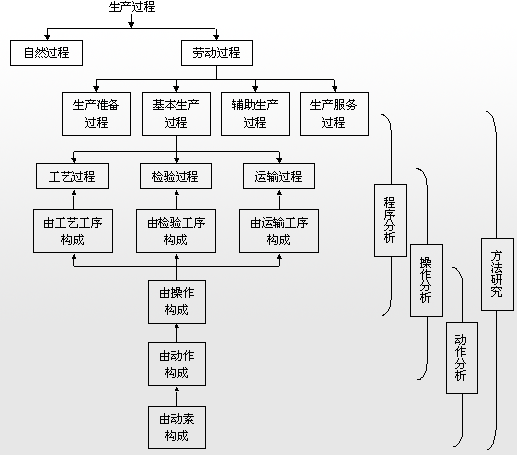

方法研究与生产过程
任何产品都有一个从原材料的投入到产品产出的生产过程。生产过程是从产品投产前一系列生产技术组织工作开始，直到把它生产出来为止的整个过程。生产过程可分为自然过程和劳动过程。
1．自然过程
借助于自然力直接作用于劳动对象，完成过程的一部分，如油漆的自然干燥，热处理零件的自然冷却等。
2．劳动过程
劳动者使用劳动工具，作用于劳动对象，使它按照人们预定的目的，成为质量合格的产品的过程。
劳动过程又可具体分为：
(1)生产准备过程。指产品投产前进行的一系列生产技术准备工作。
(2)基本生产过程。指直接对劳动对象进行加工或经过自然力的作用，使其成为产品的过程。
(3)辅助生产过程。指为了保证基本生产过程的正常进行而从事的各种辅助生产活动，这是实现基本生产过程的必要条件。
(4)生产服务过程。指为了保证基本生产过程和辅助生产过程的实现所需的各种供应服务。
其中，基本生产过程又包括工艺过程、检验过程、运输过程，这三种过程均由各自的工序组成，工序又可分为操作和动作。
工艺过程：使劳动对象的形状、大小、物理性能、化学成分、相对位置发生预计变化的过程。
检验过程：对劳动对象按照工艺、技术要求进行检查测试的过程。
运输过程：劳动对象运输于各工序之间的过程。
工艺工序：使劳动对象发生物理或化学变化的加工工序。
检验工序：对劳动对象按照工艺、技术要求进行质量检测的工序。
运输工序：在各工序间运输劳动对象的工序。
工序：一个人或一组工人，在一个工作地上，对一个劳动对象或一组劳动对象进行加工，完成生产过程的一部分。必须指出的是，一道工序是指操作者、操作对象、操作工具(包括设备、工作地)均不变，否则就不是一道工序。
操作：是工序的组成部分，是工人为了达到一个明确的目的，使用一定的方法所完成的若干动作的总和。
动作：是手工操作的构成因素，指工人接触物件、移动物件或离开物件的行为。
方法研究与生产过程联系如图4-3所示。
